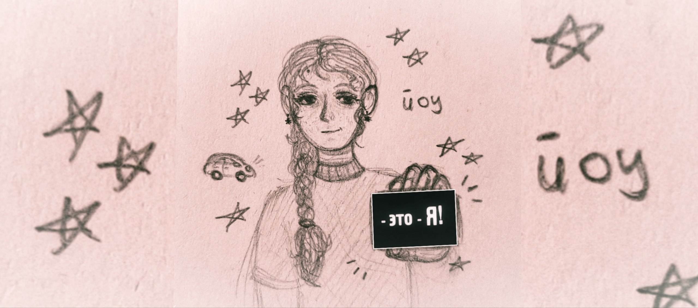

🌸 Хобби — эффективный способ борьбы с тревогой, ведь творческая деятельность переключает мозг с негативных мыслей на настоящий момент, фантазию и мелкую моторику. 🌸

1) Рисование
Рисование — занимает 1 место в моем личном топе, и я сейчас расскажу почему!


- 🎨 Вы можете рисовать в традишке (карандаш, краски, пастель, маркеры и многое другое) или в диджитале (на планшете/телефоне при помощи стилуса/пальца).
- ✨ Так можно развивать воображение, создавать OC (original characters) и придумывать сюжеты с их участием, а может даже рисовать анимации!
- 💖 Познакомлю с моим примером — в 2024 году я придумала девочку, которую назвала Элис, а в 2026 — мальчика по имени Тео, чтобы было интереснее развивать их и придумывать милые сюжеты :)


2) Фотографирование
📸 Гулять полезно, а если взять с собой фотоаппарат будет еще и интересно! Можно искать предметы одного цвета, формы или числа! Такой челлендж можно устроить вместе со своими друзьями :) И для этого увлечения вовсе не обязательно иметь много денег и постоянно путешествовать, ведь в первую очередь это искусство о тебе и самовыражении, а не о предмете съёмки.
📸 Фотографирование позволяет фиксировать уникальные моменты и развивать художественное видение. Оно тренирует внимание к деталям, композиции и свету, превращая обычные прогулки в поиск сюжетов! И конечно помогает научиться видеть красоту во всем, ты смотришь даже на обычные предметы по-новому!


3) Кулинария
🍰 В моем случае это скорее пробовать готовить только что-то сладкое, но и эксперементировать с другим тоже будет интересно! Это возможность изменять классические рецепты, сочетать несочетаемые ингредиенты, создавать уникальные блюда, узнавать о новых техниках и развивать вкус. И самое главное - ты сможешь насладишься вкусным результатом в конце!


4) Лепка
🧸 Лепка — это удивительный способ успокоить ум через тактильные ощущения. Работа с пластичными материалами помогает снять напряжение, а результат радует глаз! Я пробовала лепить из лёгкого и обычного пластелина, из глины и даже покрывать посуду глазурью!


- ✨ Развивает мелкую моторику и внимание к деталям.
- 🌸 Позволяет создавать уникальные подарки своими руками.
- 🎨 Медитативный процесс, который успокаивает и переключает мысли.
5) Театр
🎭 Театр — это про проживание эмоций и открытие различных произведений с новой стороны! Это встреча со своими мыслями и просто чудесный вариант перезагрузиться! Я очень люблю оперу и балет, реже хожу на спектакли, но каждый раз ощущаю себя воодушевленной и на душе спокойнее ;) 💫 Театр дарит незабываемые эмоции! Поэтому если ты еще ни разу не пробовал, то очень советую сходить!


Конечно существует еще множество других интересных занятий, для кого-то это вязание, игра на музыкальном инструменте или чтение книг, а для кого-то - компьютерные игры. И я скажу больше: все эти хобби я тоже пробовала, однако мы поговорили о личном топ-5! Самое главное - найти хобби по душе, а не заниматься за чем-то "модным" или "правильным", тогда и жить станет легче.